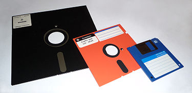

El disquete o disco flexible (en inglés: diskette o floppy disk) fue un soporte de almacenamiento de datos de tipo magnético, formado por una fina lámina circular (disco) de material magnetizable y flexible (de ahí su denominación), encerrada en una cubierta de plástico, cuadrada o rectangular, que se utilizaba en la computadora, por ejemplo: para disco de arranque, para trasladar datos e información de un ordenador a otro, o simplemente para almacenar y resguardar archivos.
 Volver